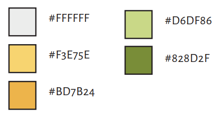
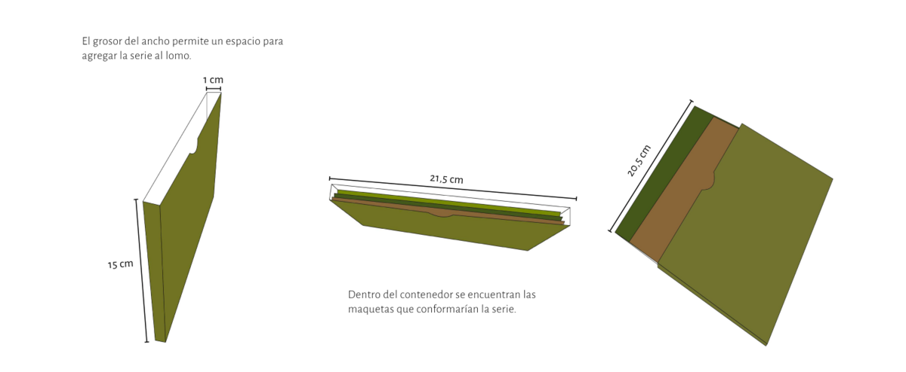

Para esta unidad debíamos desarrollar una visualización que no entrara en los esquemas genéricos de lo que implica un folleto; debíamos encontrar de una manera hacer ver el artificio gráfico de aquello oculto en los temas elegidos que quisiéramos desarrollar en nuestras propuestas.
Se eligieron los parques nacionales como punto de referencia, centrándose en la flora de los ecosistemas, principalmente en las hojas que poseían las plantas de los bosques; ya sean hierbas, arbustos o árboles.
Se debían aplicar técnicas utilizadas en talleres anteriores, en este caso para mi proyecto utilicé acuarelas para producir las hojas, los colores trabajados por capas ofrecerían una visualización de las mismas mucho más orgánicas. Las estructuras, el cuerpo de las plantas se dibujaron en digital.
Lo principal de mi propuesta fue centrarme en la morfología de la hoja, este complejo estudio lo simplifiqué en tres partes, la punta, el limbo y la base; y en la profundización se utilizó el texto como medio de desarrollo.

Oswald

Grosor: Bold
Tamaño: 26 pt
Interlineado: 31,2 pt
Espaciado entre letras: 10

Grosor: Semibold
Tamaño: 24 pt
Interlineado: 38 pt
Espaciado entre letras: 10

Grosor: Regular
Tamaño: 22 pt
Interlineado: 30 pt
Espaciado entre letras: 10

Grosor: Semibold
Tamaño: 16 pt
Interlineado: 19,2 pt
Espaciado entre letras: 0

Grosor: Medium
Tamaño: 14 pt
Interlineado: 16,8 pt
Espaciado entre letras: 10
Para los títulos que marcaban cada sección se utilizó la tipografía Oswald, es una tipografía muy característica al estar sus letras tan condensadas y aún así ser sumamente legible, tanto en formatos digital como impresos; su presencia llama la atención pero tampoco es tan compleja en su forma, haciendo que no sea disruptiva en la lectura siendo ideal para utilizarla.
Open Sans Condensed

Grosor: Medium Italic
Tamaño: 16 pt
Interlineado: 19,2 pt
Espaciado entre letras: 0

Grosor: Medium Italic
Tamaño: 14 pt
Interlineado: 16,8 pt
Espaciado entre letras: 0

Grosor: Condensed Semibold
Tamaño: 12 pt
Interlineado: 18 pt
Espaciado entre letras: 0
Carácter: Mayúsculas

Grosor: Condensed Bold
Tamaño: 11 pt
Interlineado: 16 pt
Espaciado entre letras: 0

Grosor: Semibold
Tamaño: 12 pt
Interlineado: 15 pt
Espaciado entre letras: 30

Grosor: Condensed Light
Tamaño: 14 pt
Interlineado: 14 pt
Espaciado entre letras: 30
Carácter: Mayúsculas

Grosor: Condensed Light
Tamaño: 12 pt
Interlineado: 16 pt
Espaciado entre letras: 30

Grosor: Condensed Light
Tamaño: 11 pt
Interlineado: 14 pt
Espaciado entre letras: 0

Grosor: Condensed Light
Tamaño: 9 pt
Interlineado: 12 pt
Espaciado entre letras: 20

Grosor: Condensed Light
Tamaño: 7 pt
Interlineado: 10 pt
Espaciado entre letras: 0
Para los textos y subtítulos se utilizó Open Sans Condensed, sus características visuales son similares a la tipografía Oswald, haciéndola óptima para su uso en conjunto, siendo una buena combinación. Al igual que Oswald es muy legible para verse en diferentes formatos, su apariencia es amigable y versátil para diferentes tipos de documentos.
Hierbas
Arbustos
Árboles
Las hojas se hicieron en papel fabriano de 300 gramos, con acuarelas utilizando la técnica de ir formando el color de la planta por capas que se ha utilizado con anterioridad en el Taller de Luz y Color del año 2022.
Se crea un efecto donde el dibujo abarca muchos matices, algunas partes de la hoja se verán más amarillas, otras más azuladas; esto genera una sensación de fluidez dentro de cada pieza similar al organismo de una hoja, evitando esa simpleza que se crea con los colores planos.
Se hicieron con el programa Photoshop de Adobe; para mostrar la estructura completa de las plantas presentadas, lo que más se quiso destacar son las luces y sombras que se generaban en las hojas, el follaje. El trazo está hecho de manera suelta similar al de un bosquejo para que se asimilara al trazo del grafito en las acuarelas y marcar una identidad dentro de la composición visual.
Fueron hechos en la herramienta Illustrator de Adobe, para mostrar cada ecosistema terrestre dentro del Parque Nacional La Campana donde perteneciera cada planta, sin necesidad de utilizar letras, se utilizó la paleta implementada para toda la maqueta en general.

División en dos columnas para una diagramación más consistente. Se aclaró el fondo para que hay un mejor contraste entre los colores. Iconos de los tipos de comunas que se hayan en el Parque Nacional La Campana. Cuando el texto es el elemento principal en la página se divide en dos columnas.
Se dividen los segmentos de la hoja en tres:
Punta
Forma (también va agregado los márgenes)
Terminación (con el pecíolo)
En vez de franjas se dividen ahora por líneas punteadas.
Paleta de Color
Las portadas de las series del Parque Nacional de Lauca y del Parque Nacional Queulat se imprimieron en papel hilado 9; a excepción de la del Parque Nacional La Campana que se imprimió en papel opalina española de 250 gramos.

Serie: Flora del Parque Nacional Lauca: Morfología de la flora y sus Gradientes climáticas
Región: Región de Arica y Parinacota
Hoja utilizada: Ranunculus aquatilis

Serie: Flora del Parque Nacional La Campana: Morfología de la flora y sus Gradientes climáticas
Región: Región de Valparaíso
Hoja utilizada: Tropaeolum majus

Serie: Flora del Parque Nacional Queulat: Morfología de la flora y sus Gradientes climáticas
Región: Región de Aysén
Hoja utilizada: Trifolium dubium
Serie Parques Nacionales: Morfología de las hojas y sus Gradientes climáticas
Se buscó utilizar un verde más neutro en relación a las portadas de la Serie, con las tres ilustraciones de hojas en acuarelas que representan a lada una. Tiene un breve resumen nombra a los parques que la conforman, explicando el análisis que se hace en la morfología de las hojas.
Región: Región de Arica y Parinacota; Región de Valparaíso y de Región Aysén
Hojas utilizadas: Ranunculus aquatilis, Tropaeolum majus y Trifolium dubium
El contenedor se imprimió en papel hilado de 180 gramos.
La versión final de la maqueta se imprimió en papel opalina española de 250 gramos.

En el despliegue de las láminas de la maqueta se puede indagar desde la estructura completa de las plantas hasta las hojas de las mismas, escalado en un tamaño que podría tener una hoja de verdad de la especie de planta.
Betula pendula en Chile. (s. f.). Enciclopedia ilustrada de las especies de plantas exóticas Que se cultivan en Chile. https://www.chlorischile.cl/enciclopedia%20macaya/enciclopediaangiospermas/betulaceae/betula%20web/BET-betula%20pendula.htm CONAF. (s.f.). Parque Nacional La Campana - CONAF. https://www.conaf.cl/parque_nacionales/parque-nacional-la-campana/ CONAF. (s.f.). Parque Nacional Lauca - CONAF. https://www.conaf.cl/parque_nacionales/parque-nacional-lauca CONAF. (s.f.). Parque Nacional Queulat - CONAF. https://www.conaf.cl/parque_nacionales/parque-nacional-queulat/ Contreras, T., Figueroa, J., Abarca, L. y Castro, S. (2011). Régimen de incendios y expansión de plantas naturalizadas en Chile central. Revista Chilena de Historia Natural, Volumen 84 (no.3), 307 - 323. https://www.scielo.cl/scielo.php?script=sci_arttext&pid=S0716-078X2011000300001&lng=en&nrm=iso&tlng=en Cryptocarya alba - Fundación R.A. Philippi. (2019, 23 junio). Fundación R.A. Philippi. https://fundacionphilippi.cl/catalogo/cryptocarya-alba/ Estrada, J., González Sánchez, P., Pauchard, A. y Barra Hauenstein, E. (2017). Flora Acuática y Palustre introducida en Chile. http://www.lib.udec.cl/wp-content/uploads/2017/11/Flora-acuatica.pdf Urrutia, J., Sánchez, P., Pauchard, A, y Hauenstein, E. (2017). Plantas acuáticas invasoras presentes en Chile: Distribución, rasgos de vida y potencial invasor. Gayana Botánica, Volumen 74 (no.1). https://www.scielo.cl/scielo.php?script=sci_arttext&pid=S0717-66432017000100147 Fernández, I., Bellet, M., García, E. (2010). Talleres de Botánica - Las Hojas - Real Jardín Botánico, CSIC. https://www.rjb.csic.es/jardinbotanico/ficheros/documentos/pdf/didactica/Las_Hojas.pdf Fuentes Ramírez, A., Pauchard, A., Marticorena, A y Sánchez, P. (2010). Relación entre la Acacia dealbata Link (Fabaceae: Mimosoideae) y la riqueza de especies vegetales en el centro-sur de Chile. Gayana Botánica, Volumen 67 (no.2), 188 - 197. https://www.scielo.cl/scielo.php?script=sci_arttext&pid=S0717-66432010000200004 Hauck, L., Moreira Muñoz, A. y Nezadal, W. (2016). La flora exótica ruderal del Parque Nacional La Campana, Región de Valparaíso, Chile central. Gayana Botánica, Volumen 73 (no.2). https://www.scielo.cl/scielo.php?script=sci_arttext&pid=S0717-66432016000200206&lng=en&nrm=iso&tlng=en Jiménez, M. (s. f.). Funciones, Estructura y Morfología de las hojas. CFGM Trabajos forestales y de conservación medio natural Agrotecnología (Botánica). https://servicios.educarm.es/templates/portal/ficheros/websDinamicas/20/Hojas.pdf Lupinus arboreus - Fundación R.A. Philippi. (2024, 10 agosto). Fundación R.A. Philippi. https://fundacionphilippi.cl/catalogo/lupinus-arboreus/ Morales Vargas, S. (Marzo de 2014). Tejidos Vegetales. https://www.uaeh.edu.mx/docencia/VI_Lectura/bachillerato/documentos/2014/LECT108.pdf Parque Nacional «La Campana» - SIMBIO. (s. f.). https://simbio.mma.gob.cl/CbaAP/Details/960#biodiversidad Parque Nacional «Lauca» - SIMBIO. (s. f.). https://simbio.mma.gob.cl/CbaAP/VistaImpresion/963 Parque Nacional «Queulat» - SIMBIO. (s. f.). https://simbio.mma.gob.cl/CbaAP/Details/972#biodiversidad Podanthus mitiqui - Fundación R.A. Philippi. (2023, 21 mayo). Fundación R.A. Philippi. https://fundacionphilippi.cl/catalogo/podanthus-mitiqui/ Pombal, M. M. P. M. M. Á. (s. f.). Órganos vegetales. Hoja. Atlas de Histología Vegetal y Animal. https://mmegias.webs.uvigo.es/2-organos-v/guiada_o_v_hoja.php Pombal, M. M. P. M. M. Á. (s. f.-b). Tejidos vegetales. Introducción. Atlas de Histología Vegetal y Animal. https://mmegias.webs.uvigo.es/1-vegetal/guiada_v_inicio.php Solenomelus pedunculatus - Fundación R.A. Philippi. (2020, 7 abril). Fundación R.A. Philippi. https://fundacionphilippi.cl/catalogo/solenomelus-pedunculatus-2/ Tropaeolum majus - Fundación R.A. Philippi. (2023, 5 mayo). Fundación R.A. Philippi. https://fundacionphilippi.cl/catalogo/tropaeolum-majus/ Weinmannia trichosperma - Fundación R.A. Philippi. (2019, 4 junio). Fundación R.A. Philippi. https://fundacionphilippi.cl/catalogo/weinmannia-trichosperma/